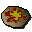

Cooked meat
| Config name | cooked_meat |
| Item id | 2142 |
| Value | 4 gp |
| Weight | 10oz |
| Members | No |
| Tradeable | Yes |
| Stackable | No |
| Options | Eat |
| Defined in | scripts/skill_cooking/configs/cooking_generic/food_cooked.obj |
Cooked meat
Mmm this looks tasty.
Show 2 ground spawns on the world map → Open in knowledge graph →
How to make
| Skill | Level | XP | Ingredients | Tool | How | Where | Makes |
|---|---|---|---|---|---|---|---|
| Cooking | 1 | 30.0 | use on object | range or fire | 1 can spoil into | ||
| Cooking | 1 | 30.0 | use on object | range or fire | 1 can spoil into | ||
| Cooking | 1 | 30.0 | use on object | range or fire | 1 can spoil into |
Used to make
| Skill | Level | XP | Ingredients | Tool | How | Where | Makes |
|---|---|---|---|---|---|---|---|
| Cooking | use on object | range or fire | |||||
| Cooking | 20 | use on item | |||||
| Cooking | 25 | use on item | |||||
| Cooking | 25 | use on item | |||||
| Cooking | 45 | 26.0 | use on item |  Meat pizza |
Dropped by
| NPC | Level | Quantity | Rarity | Via | Notes |
|---|---|---|---|---|---|
| 7 | 1 | 1/128 (0.78%) | |||
| 8 | 1 | 1/128 (0.78%) | |||
| 29 | 1 | 1/128 (0.78%) | |||
| 2 | 1 | 1/128 (0.78%) |
Sold at
| Shop | Shopkeeper | Stock |
|---|---|---|
| Aemad's Adventuring Supplies. | 2 | |
| West Ardougne General Store | 10 | |
| Bolkoy's Village Shop | 2 | |
| Jiminua's Jungle Store. | 2 | |
| Obli's General Store. | 2 |
Ground spawns
| Area | Coordinates | Level | Count | Map |
|---|---|---|---|---|
| Monastery | 3077, 3441 | 0 | 1 | view |
| Monastery | 3080, 3443 | 0 | 1 | view |
Referenced in scripts
scripts/_test/scripts/cheats/cheat_bank.rs2scripts/drop tables/scripts/barbarian.rs2scripts/drop tables/scripts/imp.rs2scripts/general_use/scripts/water_sources.rs2scripts/skill_cooking/scripts/cooking_inv/scripts/meat/cooked_meat.rs2scripts/skill_cooking/scripts/cooking_inv/scripts/pies/pies.rs2scripts/skill_cooking/scripts/cooking_inv/scripts/pizza/pizza.rs2scripts/skill_cooking/scripts/cooking_inv/scripts/stew/stew.rs2scripts/tutorial/scripts/skills/tut_cooking.rs2